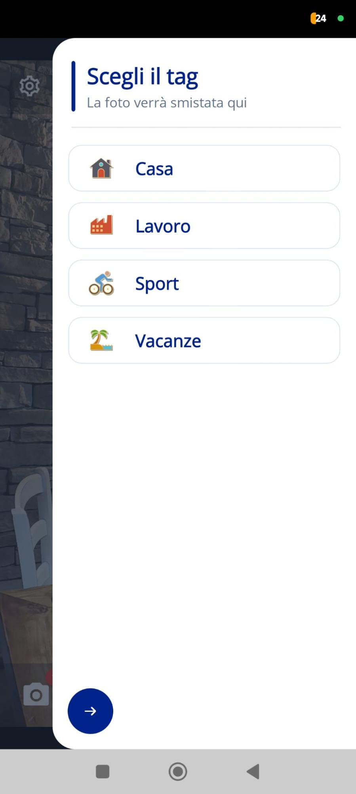
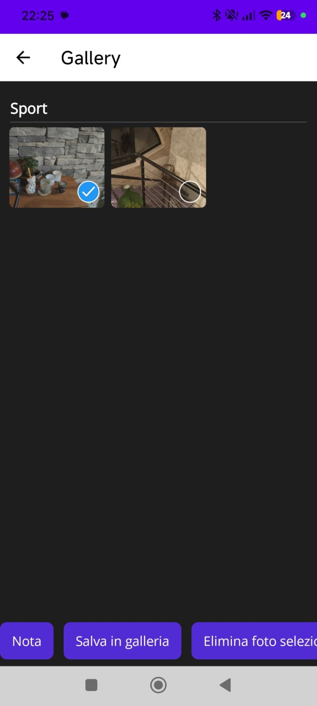
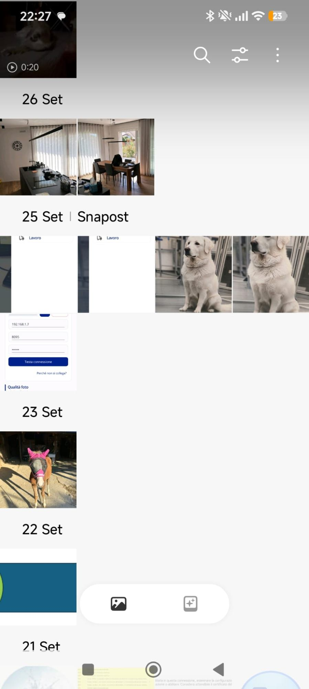
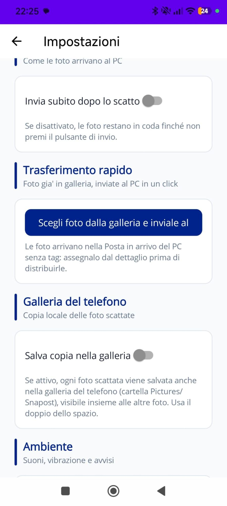

Scatto con tag
Il tag attivo è sempre in vista: toccalo per cambiarlo e la prossima foto seguirà la nuova destinazione.
La fotocamera e i tag di Snapost in una schermata: scegli la destinazione prima dello scatto e la foto parte già organizzata.
Tutto quello che scatti resta sul telefono finché non decidi tu: invio immediato o coda da gestire con calma.
Tutte le funzioni a un tocco: tag, qualità, flash e modalità di invio sono sempre visibili nella schermata di scatto.
Il tag attivo è sempre in vista: toccalo per cambiarlo e la prossima foto seguirà la nuova destinazione.
Flash automatico, sempre acceso o spento; tre livelli di qualità per bilanciare nitidezza e peso.
Consegna immediata al PC o salvataggio in attesa: le foto in coda restano sul telefono e le invii quando vuoi.
Anteprima a tutto schermo, selezione multipla e note alle foto: commenti che ritrovi anche sul PC, nel dettaglio.
Per ogni foto decidi se creare una copia anche nella galleria del telefono, anche a posteriori e senza duplicati.
Le foto che invii dal computer arrivano direttamente nella galleria del telefono: pagina dedicata ai trasferimenti.
Apri uno screenshot per vederlo ingrandito.




Il video dell'app verrà incorporato qui (YouTube o file diretto).
Disponibile su Google Play. Ricorda: per il flusso completo serve anche l'app gemella per Windows.